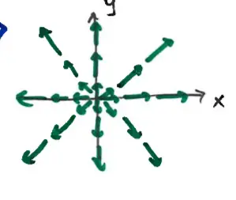

17.4 Green's Theorem
Let \(\vec{F} = \langle f, g \rangle\)
The vector quantity \(\left( \frac{\partial g}{\partial x} - \frac{\partial f}{\partial y} \right) \vec{k} = \langle 0, 0, g_x - f_y \rangle\) is called the curl of \(\vec{F}\), written as \(\text{curl } \vec{F}\).
\(|\text{curl } \vec{F}| = |g_x - f_y|\) is a measure of rotation in \(\vec{F}\).
For example, \(\vec{F} = \langle x, y \rangle\)

\(\text{curl } \vec{F} = \langle 0, 0, 0 - 0 \rangle = \vec{0}\)
\(|\text{curl } \vec{F}| = 0\)
indicating no rotation
confirmed by visual inspection